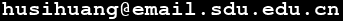

School of Cyber Science and Technology
Qingdao, China

Before joining Shandong University,
I was a
Humboldt Research Fellow at
Lehrstuhl
D für Mathematik of RWTH
Aachen from 2017 to 2019, hosted by Prof.
Gabriele Nebe. (I was also here from 2014 to 2015.)
From 2015 to 2017, I was a postdoc at Department of EE – Systems of Tel Aviv University, working with Prof. Ofer Shayevitz.
From 2009 to 2014, I was a PhD student at Department of Mathematics of Zhejiang University, advised by Prof. Gennian Ge.
My research interests are combinatorics, information theory, lattices and coding theory.